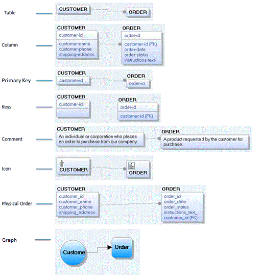

The Physical Display levels are as follows:
Based on the model's target database, displays the name of each table, node, collection, record, document, or JSON object in the data model. No other information is displayed for the table.
Based on the model's target database, displays the columns or fields for each table in a data model, with the primary key columns above the line and the non-key columns below the line in a box.
Displays the primary key columns (those found above the line in a table box) for each table in a data model. The columns below the line are hidden, but display when you switch back to the Column Display Level and you can also see them in the Table Column Editor.
Displays primary key columns above the line and does not display any non-key columns below the line in a table box. Table boxes have two column boxes; the upper populated with the PK columns and the lower populated with the columns belonging to all key types except PK.
For graph databases (ArangoDB and Neo4j), displays the model in the graph-like representation.
Displays the comment for each table in a data model.
Displays the bitmap, if you have assigned one to the table. You can assign a different bitmap to each entity in the Icon tab of the Table Editor.
Displays the order in which each column appears in the corresponding table.
The following diagram uses the same tables and illustrates each of the physical display levels:
